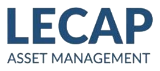

About
Alexandre Dalban
I take prediction problems from the data to a model to something that runs, and then hold the result to the same standard as the experiment.
I'm finishing an MSc in Artificial Intelligence at CentraleSupélec in Paris, and I'm spending the last months of it as an applied AI research intern at Siemens in Munich. Before the MSc I studied mathematics and computer science at Boston College, and I spent two summers doing alpha research at a systematic equity hedge fund in London. On the side I co-built and ran a live prediction-market trading system, trained a distributional forecaster for cryptocurrencies, fine-tuned an 8B language model for reliability engineering, and placed 458th of 18,803 teams in IMC's Prosperity 4 trading competition. The front page lists all of it with dates and results.
Two things matter to me: research that ends up running, and results that survive their own audit. I use Claude Code heavily, with custom skills in most of my repositories. That's a large part of how I can ship a production rewrite in a few days on my own.
Availability. I'm looking for full-time roles from November 2026, in London, the United States, the EU (Paris, Amsterdam, Munich) or Switzerland (Zurich). I'm also open to research residencies and fellowships. I'm a US and EU citizen with UK settled status, so I have full working rights in all three and don't need sponsorship. French and English are both native languages for me.
Education
Core courses: machine learning, optimisation for ML, big data for AI (Apache Spark), deep learning, foundations of AI, decision modelling. Electives: AI for finance, stochastic optimisation, advanced deep learning, reinforcement learning, ensemble learning, machine learning in network science. I did a joint two-person research project on a domain-specific LLM for reliability engineering, supervised by Dr. Zhiguo Zeng (LGI laboratory). The paper is in preparation. I also placed first in the school's GreenAI hackathon.

Mathematics courses: learning theory, probability, statistics, mathematical logic. Computer science courses: computer systems, algorithms, machine learning, deep learning, natural language processing, object-oriented design. My course research project was TensorTalk (zero-shot voice cloning), in a team of four, and I was first author.
Experience
- I'm automating a manual step in manufacturing (CAD to CAM). The model detects machinable features such as holes, pockets and slots on 3D part designs, replacing work that's currently done by hand. It uses self-supervised learning on sampled point clouds and builds on Meta's Sonata and Xiaomi's Utonia.
- I use graph neural networks for classification.
- The current approach gets about 95% panoptic quality on the MFInstSeg benchmark, which is on par with the state of the art.

- I researched and validated 100+ alpha signals for a systematic equity portfolio strategy, to support portfolio construction.
- I built production Python tooling for the live trading environment. One piece was an automated weekly reporting system that evaluates 150+ signals across 8 performance metrics, which replaced manual analysis.
- I built a supervised forecasting pipeline that ran from classical models through transformer architectures, trained on 90 proprietary indicators and Axioma factor-residualised returns across the top 1,000 North American equities. The best model reached 54% daily directional accuracy against a coin-flip baseline near 50%.
- I developed PPO reinforcement-learning agents rewarded on rolling 5-, 10- and 20-day realised Sharpe and P&L. They produced dynamic indicator weightings for a composite prediction signal.
- I went back for a second summer.
Selected results
- Live trading system on Polymarket, co-built and run on personal capital, February to June 2026, wound down by choice; two documented postmortems.
- Phantom reached an out-of-sample rank IC of 0.124 at 10 days across 362 cryptocurrencies, self-audited in July 2026. Manuscript in preparation.
- Reliability-engineering LLM, which gained +18.6 percentage points on an 866-question benchmark built from 56 seeds (joint work, paper in preparation).
- IMC Prosperity 4, April 2026. Rank 458 of 18,803 teams and Finalist Crew, in a team of three.
- HackEurope, February 2026. Second place in the Solana challenge with DeFi Sentinel (joint hackathon entry).
- CentraleSupélec GreenAI hackathon, first place.
Skills
- Languages
- Python (advanced, daily), Rust (working, I've written a Monte Carlo market simulator in it) and Java (basic).
- Deep learning
- PyTorch, Transformers and attention, self-supervised and generative models, time-series and distributional forecasting (Student-t heads, CRPS), graph neural networks.
- LLM post-training
- QLoRA and Unsloth, GRPO with verifiable rewards, DPO, Self-Instruct style synthetic data with cross-model verification, evaluation design.
- Reinforcement learning
- PPO, MaskablePPO, MCTS and GRPO, with Gymnasium and stable-baselines3.
- Quantitative research
- Alpha research and signal evaluation, factor residualisation (Axioma), walk-forward validation, deflated Sharpe and overfitting controls, binary-option pricing, market microstructure (L2 books, order-flow imbalance, maker versus taker economics).
- Systems
- asyncio and aiohttp services, FastAPI, Redis Streams, Postgres and SQLite, DuckDB and Parquet, Docker, systemd deployments, SLURM on A100 clusters, LightGBM, Optuna, MILP with PuLP/CBC.
- Tooling
- Git, Linux, LaTeX, Claude Code (custom skills for research pipelines, deploys and diagnostics).
Contact
alexandre.dalban@gmail.com · github.com/ADnocap · linkedin.com/in/alexdalban · one-page CV (PDF). References are available on request.